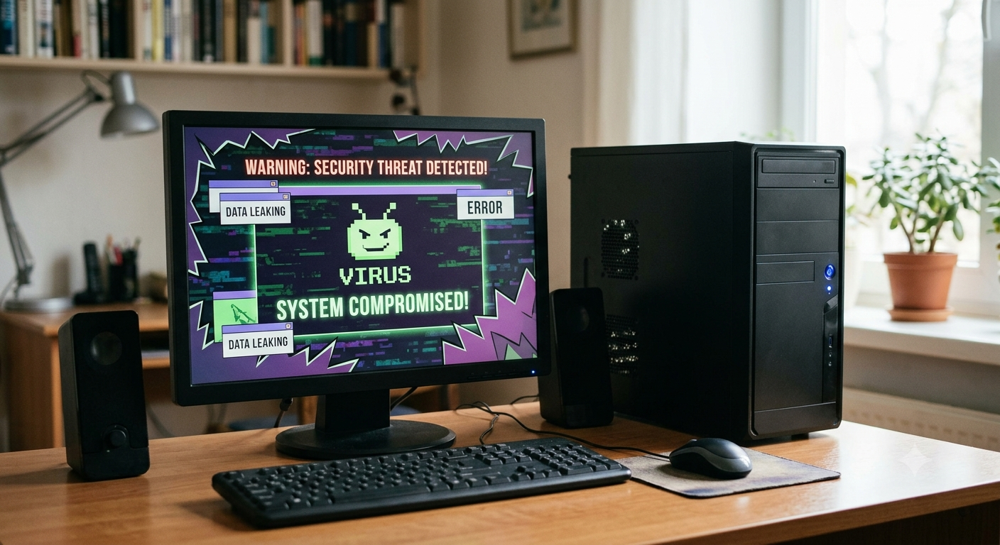

Meu primeiro post
Por: Caike Wianoski
Boas-vindas ao meu novo blog! Aqui vou compartilhar os perigos do cyberbullying e como ele pode afetar os jovens.
O cyberbullying acontece quando uma pessoa usa a internet, redes sociais, jogos ou aplicativos para ofender, humilhar, ameaçar ou espalhar coisas ruins sobre outra pessoa.
🔎 Curiosidades sobre o cyberbullying
1. Pode acontecer em qualquer lugar
O cyberbullying pode acontecer em redes sociais, jogos online, grupos de mensagens e comentários na internet.
2. Pode atingir muitas pessoas
Uma mensagem ou imagem ofensiva pode ser compartilhada rapidamente e chegar a muitas pessoas.
3. Pode afetar os sentimentos
Quem sofre cyberbullying pode ficar triste, preocupado, com vergonha ou com medo de conversar com outras pessoas.
4. A internet deixa registros
Mesmo quando uma publicação é apagada, alguém pode ter feito uma captura de tela.
5. Uma brincadeira pode machucar
O que parece engraçado para uma pessoa pode ser ofensivo para outra.

🛡️ Como evitar o cyberbullying?
- Não compartilhe mensagens para humilhar alguém.
- Não participe de grupos que atacam outras pessoas.
- Pense antes de publicar alguma coisa.
- Converse com um adulto de confiança.
- Bloqueie e denuncie quem pratica agressões.
- Guarde prints das mensagens ofensivas.
📱 Onde o cyberbullying pode acontecer?
Ele pode acontecer em vários lugares da internet:
- TikTok
- YouTube
- Jogos online
- Comentários em redes sociais
💭 O que fazer se eu sofrer cyberbullying?
Se isso acontecer, você não precisa enfrentar a situação sozinho.
Converse com seus pais, responsáveis, professores ou outro adulto de confiança.
Também é importante bloquear e denunciar quem está praticando as agressões.
❤️ Respeito na internet
A internet pode ser um lugar divertido para aprender, conversar e fazer amizades.
Antes de publicar alguma coisa, pense: "Eu gostaria que fizessem isso comigo?"